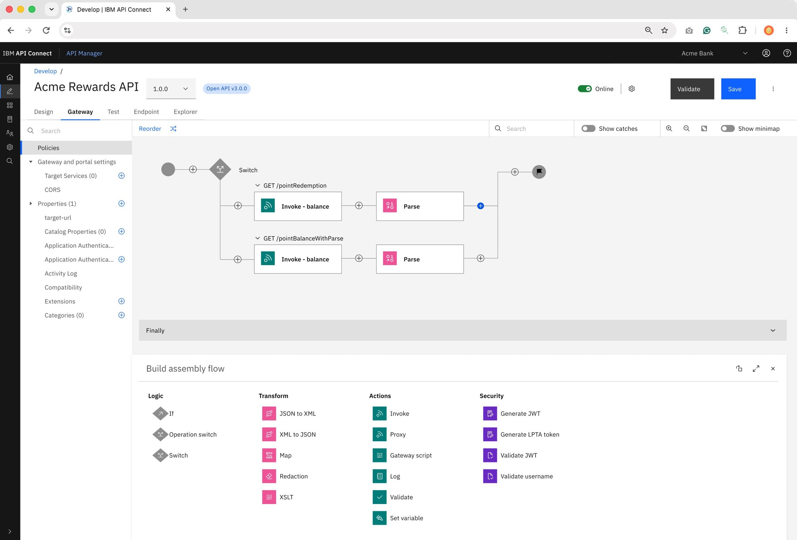
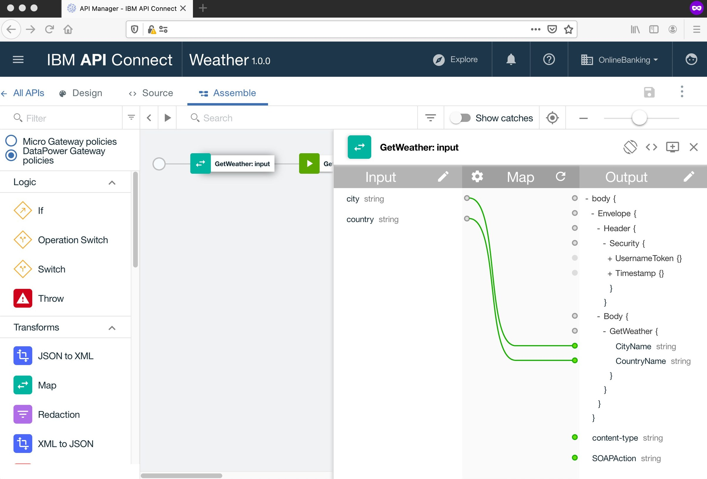
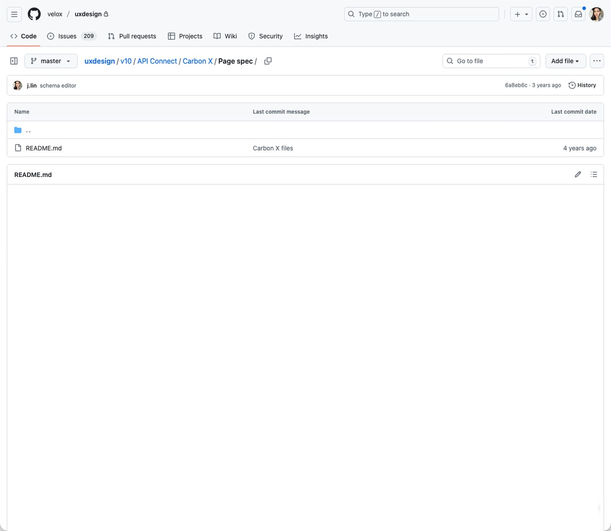
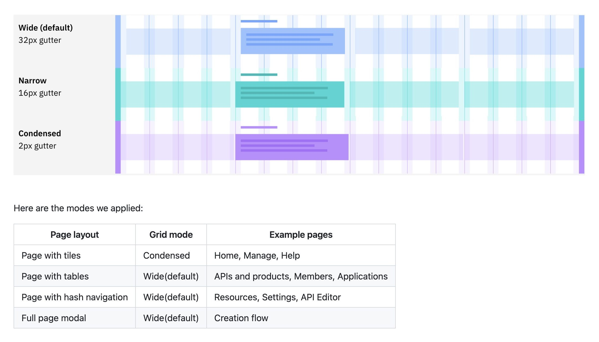
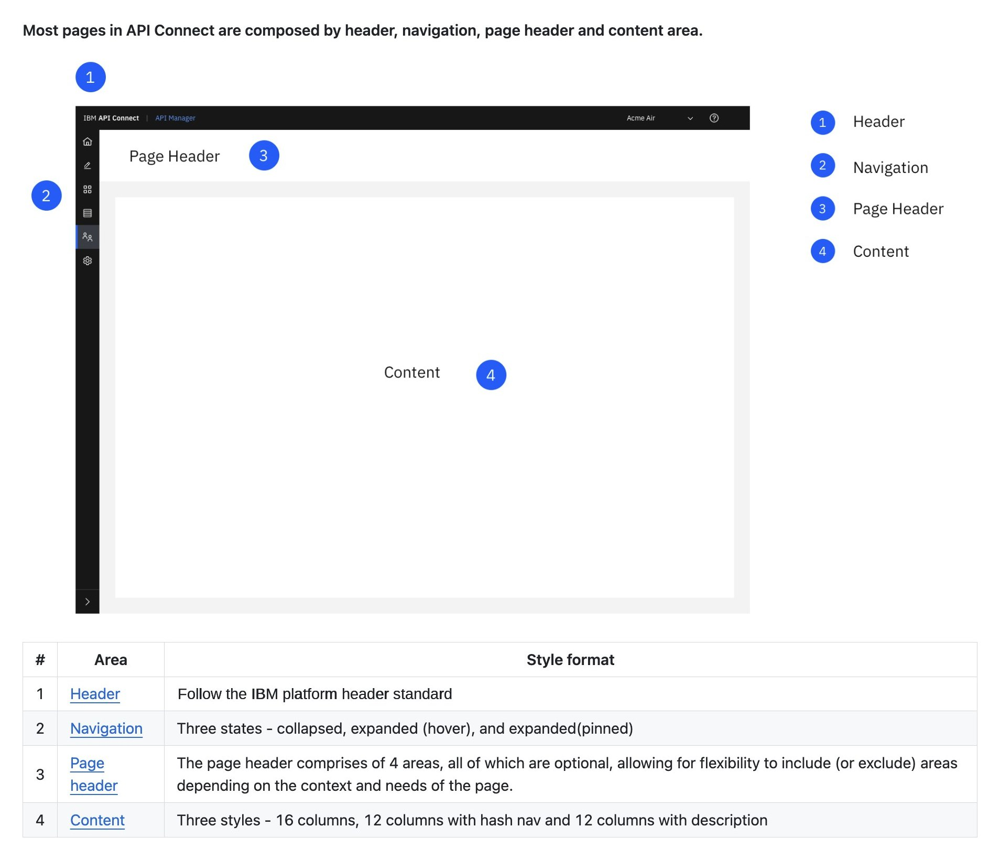
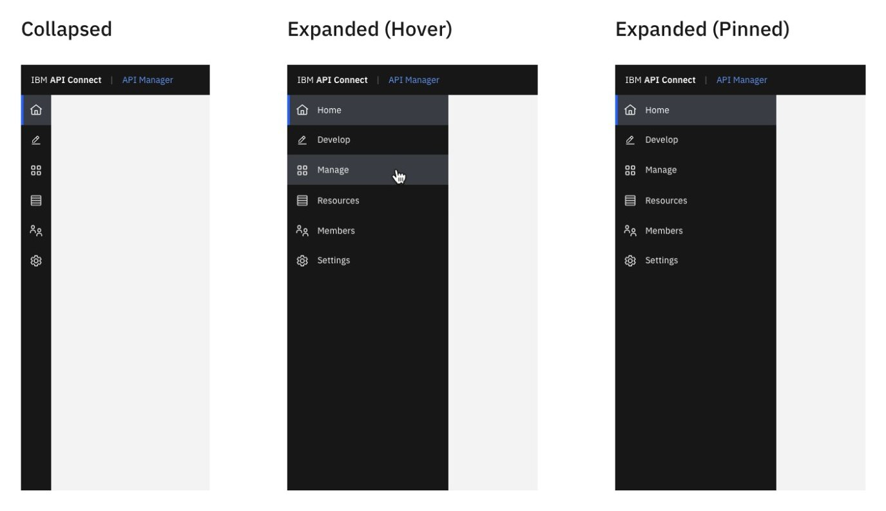
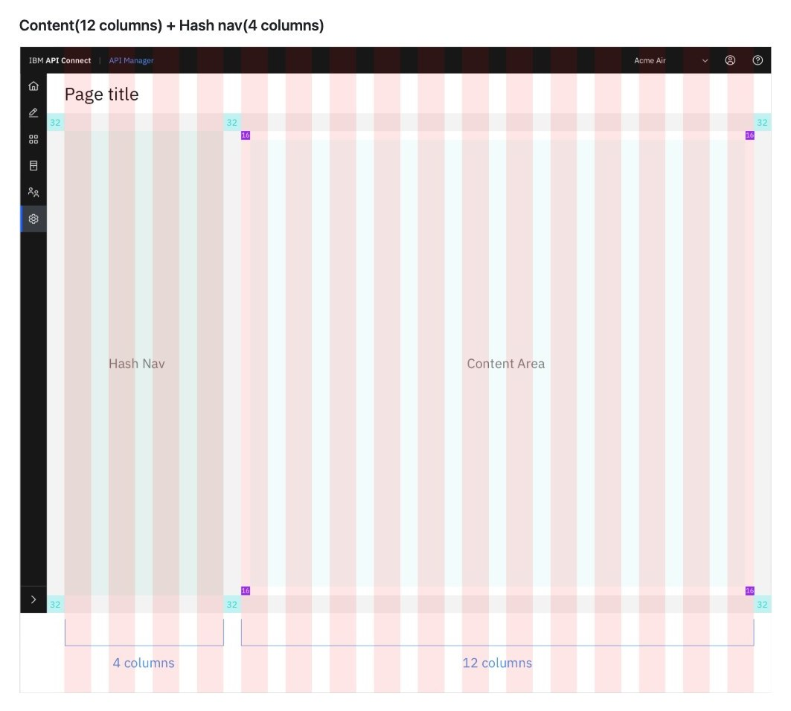
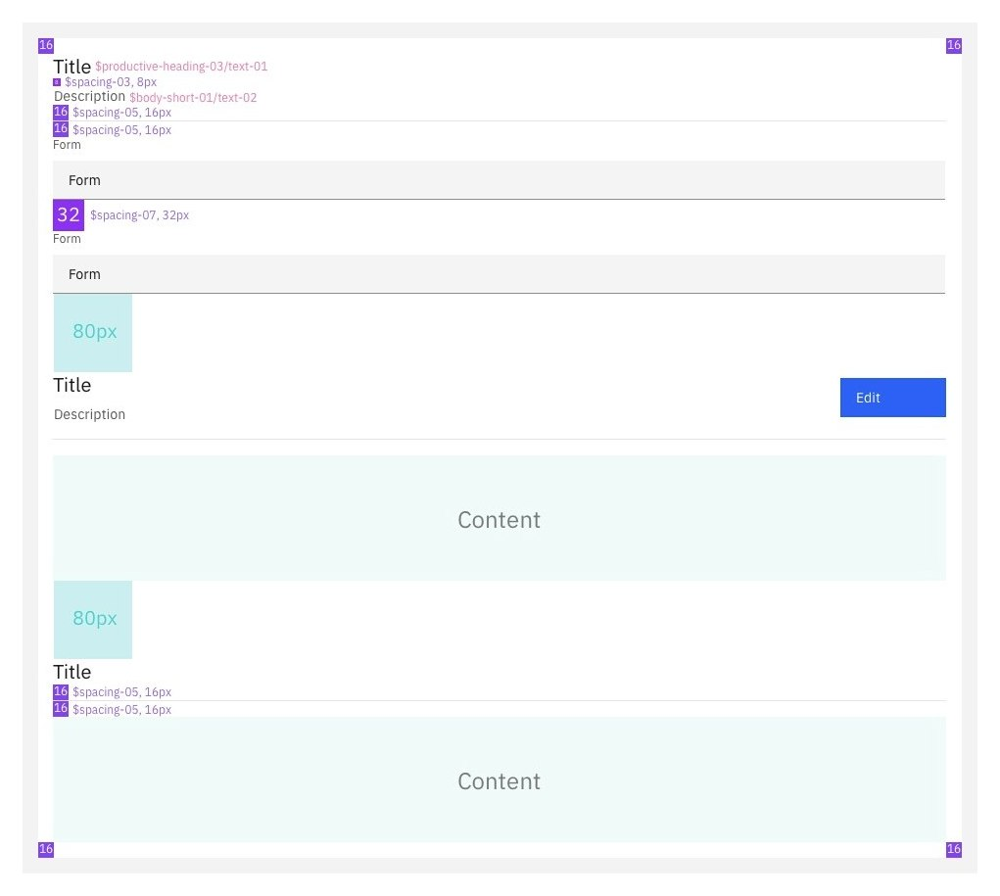

Adopting a standard that didn't exist yet
By 2018, API Connect had years of accumulated interface, built by different teams against different judgments. The V6 to V2018 release was a structural rebuild.

After · Carbon
Before · V6At the same moment, API Connect was picked as the first product to adopt Carbon, IBM's new design system. The interface was built on Google Material Design, so nothing could carry over, and Carbon's guidelines still covered very little.
Normally a product applies an established standard to itself. We were defining a product-level standard while the enterprise-level one was still forming.
Two decisions
First: own the page, not the parts. Carbon provides components and a few patterns, such as modals, forms and side panels. It does not say how a page comes together. So I audited the existing pages and consolidated them into a set of page patterns: Carbon's components, arranged into the page formats this product needs.
Second: use Carbon wherever Carbon can be used. Carbon's promise was that following the standard would make future upgrades easy, which means every customization is a decision to give up that upgrade path.
Every customization is a vote against your next upgrade.
So what justifies giving it up? My answer was structural impossibility, and nothing softer. Not the custom version looks better, not it matches what people expect, but no arrangement of the base components can produce this.
I held it to exactly two exceptions: a canvas pattern for API policy editing, and a tree navigation pattern for presenting API specifications in the editor. Both sit in the product's core workflow. I took both to the Carbon team, and both became official patterns.
Making it stick
A rule that lives in a document doesn't survive contact with a deadline, so I built three things around it.
A component library, set up as a template so any designer could extend it the same way. Use the components and you comply automatically.
Figma APIC pattern library
A pattern wiki on GitHub, where designers and developers could both reach it. It was organized into five main categories, each decision shown with a real example and built on the same Carbon components engineering used.
GitHub APIC pattern wiki

Grid modes
Carbon offers three gutter modes. The wiki decides which page layout uses which, so nobody has to.

Page anatomy
Most pages are built from the same four parts. Each part is specced once and reused everywhere.

Navigation
Three states, collapsed, hover and pinned, so every product area behaves the same way.

Page with hash navigation
Every page template is built on the grid. This one gives 4 columns to the hash navigation and 12 to content.

Section spec
Every gap mapped to a Carbon token, so engineers never had to guess.

A weekly session for two months, through to the V2018 code cut, while designers applied the patterns to the pages they owned. Every question someone brought was a place the rule was unclear or a pattern needed to bend.
Eight years later
We adopted Carbon at v9. Since then Carbon has shipped two major versions, v10 and v11, and each one is a migration that every product on the system has to absorb. Two migrations and eight years later, roughly 80% of the core product still follows the page patterns we defined in 2018. The other 20% is mostly newer features, built with Carbon components that did not exist then.
It also spread. The system became the reference standard for other products under Cloud Pak for Integration, including products IBM has acquired since. For a newly acquired team the wiki is a starting point: they fit their content into a page structure that already exists.
Eight years in, I was invited to IBM Carbon Day at the San Jose office to share that journey, from pilot product to the latest version of Carbon, with 80 product managers, designers and engineers. The product that had been Carbon's first pilot was now the case study.
What I learned
The decision that aged best was what we chose to own. Carbon has kept adding components, and our page patterns are still the truth, because how a page is put together changes far more slowly than the parts it is made from.
Design systems don't fail at the component level. They fail at adoption. The library, the wiki and the sessions were built so the standard would not depend on me, and after the v10 release it didn't.
The part of this I'm proudest of is what we chose not to build.